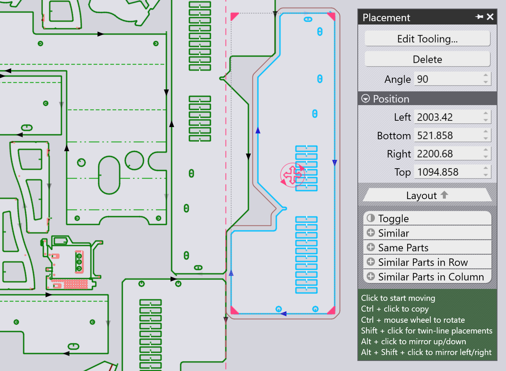

配置パネル
追加したパーツ（またはレイアウトの既存のパーツ）は、パーツをクリックすると表示される配置パネルで、移動、回転、コピーできます：

-
左、 下端、 右 と上端設定はパーツの_ バウンディングボックス_の境界です。これを使うと、パーツを正確に配置できます。
-
パーツ中央の赤い丸い_ハンドル_をクリックして、それを材料の位置にドラッグします。パーツをドラッグして動かすと、TecZone Laserがスナップガイドラインを追加し、隣接するパーツとの正確な間隔（ブリッジ幅）を保つのに役立ちます。パーツを配置する際、現在のパーツコンターからブリッジ幅オフセットした_アウトライン_もパーツの周りに描画されます。
-
角度 設定を使用して、パーツを回転し、他の方向を試すことができます。パーツをドラッグハンドルで移動する際、Ctrlキーを押しながらマウスホイールを回すと、パーツをインタラクティブに回転できます。
-
Ctrl+クリックを使って、パーツのコピーを作成し、そのコピーをドラッグ出来ます。
-
Alt+クリックを使って、パーツを垂直に反転し、 Alt+Shift+クリックてパーツを水平に反転します。
-
このパネルの下部にはいくつかのセレクターがあります：
-
選択反転をクリックして、選択したパーツの選択を解除し、他のすべてを選択します。
-
類似のをクリックして、_同じ角度の_パーツすべてのコピーを選択します。
-
同じパーツをクリックして、同じパーツのすべてのコピーを選択します（回転角度に関係なく）。
-
類似パーツの列 をクリックして、同じ角度および同じ水平位置のすべてのパーツを選択します。
-
類似パーツのコラム をクリックして、同じ角度および同じ垂直位置のすべてのパーツを選択します。
-
TwinLine （共通線）配置
Shift+クリックを使用してパーツをドラッグすると、配置が_TwinLine_モードになります - 2つの平行なエッジをドラッグして近づけると、TecZone Laserがそれらを正確に1つのカーフ幅の距離にスナップし、共通の線として同時に切断できるようにします。 これは、Shift＋クリックでパーツをドラッグした際のスナップ例です：

マウスを放すと、2 つのパーツが 1 つのツインライン グループを形成し、共通線は 1 回だけ切断されます (中央の斜めの線には切断線矢印が1つだけあるのがわかります。)。

繰り返しとパーツ グループ化


パーツツーリングの編集
配置パネルのツーリングの編集…ボタンを使用して、レイアウトで選択した 1 つまたは複数のパーツのレーザ切断ツーリングを調整できます。まず、必要な類似のパーツのグループを選択します ツールを編集するには：

他のすべてのパーツはグレー表示され、TecZone Laserが 選択したパーツにズームインし、そのパーツのツーリングを編集できます。この例では、円形の開口部の1つにスクラップ切断加工工程を追加し、抜きカスを切断したいとします。：

（抜きカス切断追加など）編集を行うと、それは選択した全パーツに適用されるのが確認できます。編集中のパーツグループから離れた場所をクリックすると、完全にもとのレイアウトに戻ります。選択した3つのパーツすべてに抜けカス切断用のツーリングが追加されているのが確認できます。